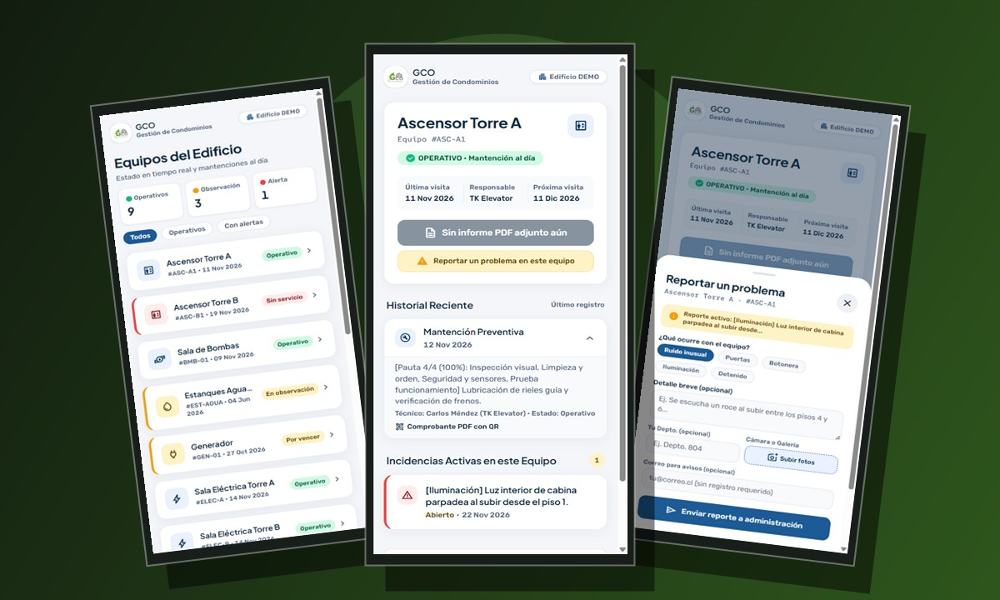

GCO App: 6 ventajas que nos diferencian de una administración tradicional
Hoy casi todas las administraciones usan el mismo software para cobrar gastos comunes. Sin embargo, cuando ocurre un problema real en el edificio —se detiene un ascensor, falla el hidropack o hay que demostrar que una mantención preventiva sí se realizó— la mayoría vuelve a planillas sueltas, correos perdidos y grupos de WhatsApp saturados.
Para resolver ese vacío operativo, desarrollamos GCO App: una aplicación web propia (sin descargas) que conecta en tiempo real a residentes, técnicos mantenedores, Comité de Administración y nuestro equipo en terreno.
1. Semáforo QR en cada equipo crítico
Cada ascensor, sala de bombas, portón vehicular o grupo electrógeno cuenta con una lámina QR instalada en el edificio. Al escanearla con cualquier cámara, el residente o integrante del Comité ve al instante si el equipo está Operativo, En Observación o Fuera de Servicio, la fecha de la última visita, la próxima mantención y los informes PDF históricos.
2. Adiós a los reclamos perdidos en WhatsApp
Cuando un vecino detecta una falla, escanea el QR del equipo, selecciona el síntoma (ruido, iluminación, puertas, detenido), sube una fotografía y envía el ticket en menos de 30 segundos. Cada incidencia queda con seguimiento de tiempos de respuesta (SLA) y avisa automáticamente cuando se resuelve.
3. Informes de Ronda Operativa en PDF con fotos reales
Cada supervisión presencial de nuestro Jefe de Operaciones genera un Informe de Ronda Operativa en PDF con resumen KPI, checklist técnico y evidencia fotográfica por sector, respaldado en la nube para que el Comité tenga visibilidad total sin tener que perseguir reportes.
4. Funciona sin señal en subterráneos y salas de máquinas
Sabemos que en salas de bombas y subterráneos muchas veces no hay cobertura celular. GCO App opera con caché y cola de sincronización offline: el técnico registra su pauta de chequeo, adjunta evidencia y firma digitalmente en pantalla; apenas recupera señal, todo se sincroniza y publica de forma automática.
5. Portal Comité con Comparador IA y Actas PDF (Ley 21.442)
El Comité accede a un entorno exclusivo de su comunidad donde revisa el calendario preventivo, vencimientos de documentos legales, cotizaciones de trabajos con comparador asistido por inteligencia artificial, registro de acuerdos y generación de Acta Ejecutiva PDF lista para asambleas.
6. Privacidad por diseño: cero datos financieros expuestos
En GCO separamos estrictamente la operación del edificio de la información financiera sensible. En GCO App nunca se muestran deudas por unidad, cartolas bancarias ni RUTs de copropietarios: cada perfil (residente, técnico, comité y administración) ve únicamente lo que le corresponde.
No nos creas solo por texto: pruébala ahora mismo
Habilitamos un Edificio DEMO abierto sin registro para que tú y tu Comité recorran GCO App directamente desde el celular o computador.